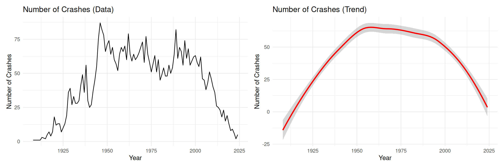
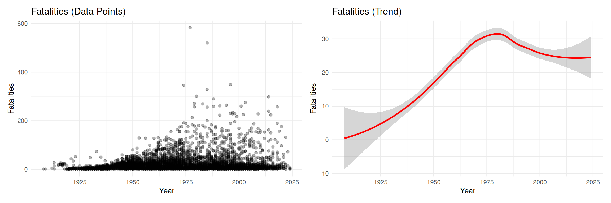
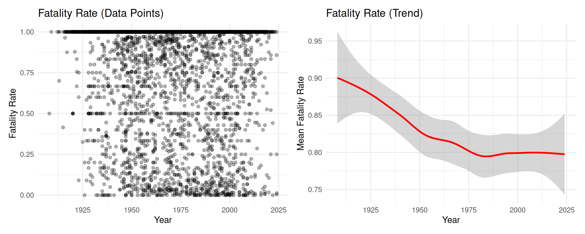
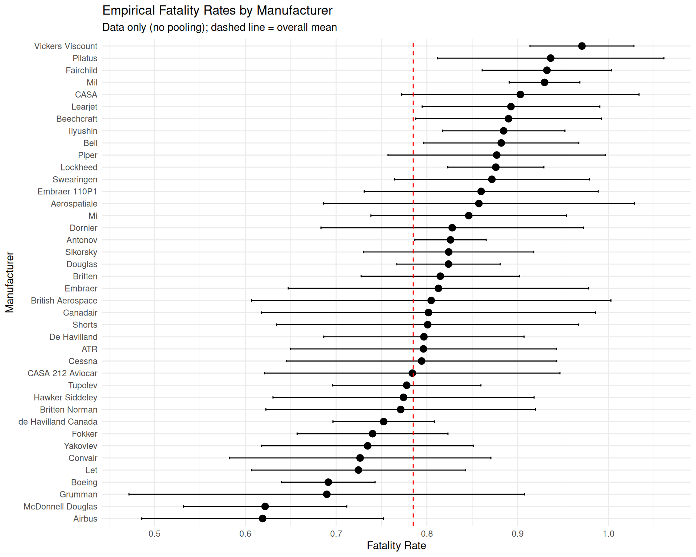
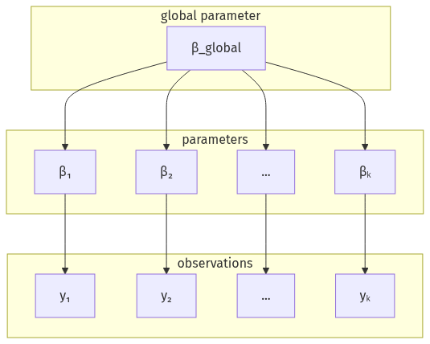
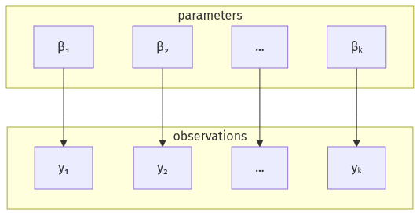
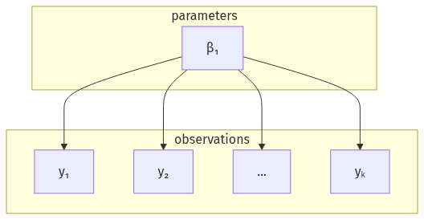

The dataset used in the project describes the air plane crashes from 1908 to 2024. In our project, we’ll only focus on crashes that happened after the year 1970. (WHY???) We make this decision to get a better picture of the current state of the industry. The dataset can be found and downloaded from Kaggle [1].
Motivation
rewrite these? Aviation has undergone massive developments since the first commercial flight in 1914. Airplane safety has always been the top priority for airlines; a single airplane crash will drive away customers to safer perceived airlines and, of course, cost lives. Although this priority of making airplanes as safe as possible has significantly reduced the number of crashes over the years, accidents still continue to occur. However, not all accidents are the same; survivability in crashes varies significantly. Understanding which factors influence survivability in crashes remains crucial for manufacturers and airlines seeking to minimize the loss of life. While accident prevention remains the most important priority, understanding the fatality patterns when accidents do occur is equally important in discussions of airplane safety.
Problem
When aviation accidents occur, the fatality rates vary significantly from incidents where all passengers survive to catastrophic losses of all who were on board. This variation raises critical questions: Has the likelihood of surviving an airplane crash improved over time? Do certain airplane manufacturers demonstrate consistently higher crash survival rates than others? How much of the variation in crash fatality rates can be attributed to crash specific details of individual accidents versus inherent airplane characteristics? These are questions that we hope to answer in our report.
Similar Projects
Kaggle has three projects linked to the plain crash dataset [1]
All with python, not R like ours
None of the projects use the bayesian data analysis tools we use in our project (hierarchical and non-hierarchical models, priors and posteriors)
Two of the three projects have exploratory data analysis like ours (in the beginning of our report)
Other than the three notebooks in Kaggle, there are no other similar projects with the dataset that the team would be aware of
Data Description
Crashes Over Time
# Figure 1: Number of crashes - datafig1 <- crashes %>%group_by(year) %>%summarise(n_crashes =n()) %>%ggplot(aes(x = year, y = n_crashes)) +geom_line() +labs(title ="Number of Crashes (Data)",x ="Year", y ="Number of Crashes")# Figure 2: Number of crashes - trendfig2 <- crashes %>%group_by(year) %>%summarise(n_crashes =n()) %>%ggplot(aes(x = year, y = n_crashes)) +geom_smooth(method ="loess", color ="red", se =TRUE) +labs(title ="Number of Crashes (Trend)",x ="Year", y ="Number of Crashes")fig1 + fig2

Temporal trends in aviation accidents
Fatalities Over Time
# Figure 3: Fatalities - data pointsfig3 <- crashes %>%ggplot(aes(x = year, y = fatalities)) +geom_point(alpha =0.3) +labs(title ="Fatalities (Data Points)",x ="Year", y ="Fatalities")# Figure 4: Fatalities - trendfig4 <- crashes %>%ggplot(aes(x = year, y = fatalities)) +geom_smooth(method ="loess", color ="red", se =TRUE) +labs(title ="Fatalities (Trend)",x ="Year", y ="Fatalities")fig3 + fig4

Trends in aviation accidents
Fatality Rate Over Time
# Compute yearly mean fatality raterate_ts <- crashes %>%group_by(year) %>%summarise(mean_rate =mean(fatality_rate, na.rm =TRUE),sd_rate =sd(fatality_rate, na.rm =TRUE),n =n(),se =ifelse(n >1, sd_rate /sqrt(n), NA_real_) )# Figure 5: Fatality rate - data pointsfig5 <- crashes %>%ggplot(aes(x = year, y = fatality_rate)) +geom_point(alpha =0.3) +labs(title ="Fatality Rate (Data Points)",x ="Year", y ="Fatality Rate")# Figure 6: Fatality rate - trendfig6 <-ggplot(rate_ts, aes(x = year, y = mean_rate)) +geom_smooth(method ="loess", color ="red", se =TRUE) +labs(title ="Fatality Rate (Trend)",x ="Year", y ="Mean Fatality Rate")fig5 + fig6

Mean fatality rate by year
To conduct a modern analysis on plane crash fatalities, we do not want to include observations from far back in the history. We need some reasonable cutoff point that keeps sufficient amount of data and allows us to model modern aircraft data. The fatalities trend shows a turning point at around 1975 so it is reasonable to choose that as our observation cutoff year.
# Compute empirical fatality rates by manufacturer (≥10 crashes)empirical_rates <- crashes_filtered %>%group_by(aircraft_manufacturer) %>%summarise(mean_rate =mean(fatality_rate, na.rm =TRUE),sd_rate =sd(fatality_rate, na.rm =TRUE),n =n(),se =ifelse(n >1, sd_rate /sqrt(n), NA_real_),.groups ="drop" ) %>%mutate(lower_ci = mean_rate -1.96* se,upper_ci = mean_rate +1.96* se ) %>%arrange(mean_rate)# Plot empirical ratesempirical_rates %>%mutate(aircraft_manufacturer =fct_reorder(aircraft_manufacturer, mean_rate)) %>%ggplot(aes(x = mean_rate, y = aircraft_manufacturer)) +geom_point(size =3) +geom_errorbarh(aes(xmin = lower_ci, xmax = upper_ci), height =0.2) +geom_vline(xintercept =mean(crashes_filtered$fatality_rate), linetype ="dashed", color ="red" ) +labs(title ="Empirical Fatality Rates by Manufacturer",subtitle ="Data only (no pooling); dashed line = overall mean",x ="Fatality Rate", y ="Manufacturer" ) +theme_minimal()

Data Modeling
We address these questions using hierarchical Bayesian modeling of fatality rates across aviation accidents from 1970 to 2024. In this approach we will assume that the aircrafts from the same manufacturers share some of the same characteristics, like similar design choices, engineering approaches, and safety systems. We still keep the information that all the aircrafts are similar with each other by having the high-level pooling for all the aircrafts. We will compare this partially-pooled model with two different models: fully pooled model and fully separate model.
Hierarchical Models

Figure 1: Hierarchical Model (partial pooling)
What are hierarchies? Levels of abstractions that group data points into groups
Examples of hierarchies plane crash dataset:
manufacturer
plane model
time of year plane crashed (month)
A benefit of hierarchical models is their ability to estimate results for lower levels in the hierarchy even when there is limited data available. [2]
partial pooling
Non-Hierarchical Models

Figure 2: Non-Hierarchical Model (no pooling)

Figure 3: Non-Hierarchical Model (complete pooling)
Non-hierarchical models fit parameters for each opservation seperately
Manufacturers are not independent
decades are not independent
Countries/regions are not independent
Complete pooling/no pooling
Prior selection
Global intercept
For the intercept term \(\alpha\), we can use an informative prior by using the observed fatality rate of \(\approx 0.8\) from the data. We can use a normal distribution with the mean value coming from the observed fatality rate transformed onto the logit scale by
For example, \(\operatorname{logit}(0.8) \approx 1.386\), which we round to \(1.4\). For a weakly informative prior like ours, a standard deviation of \(1\) is a reasonable choice to keep the coefficient in a reasonable ballpark without adding too much constraint.
Year coefficient
For the \(\beta\) coefficient on the normalized year we can be more conservative. The fatality rate plot shows only little yearly change, so it is reasonable to constrain the \(\beta\) prior to smaller values. A normal distribution with mean \(0\) and standard deviation \(0.5\) seems reasonable. The 95% credible interval for \(\beta\) is then approximately \([-1.0, 1.0]\).
Group level standard deviation
In our hierarchical model we have an extra intercept term based on the aircraft manufacturer, which is drawn from a normal distribution with a mean of 0 and standard deviation of \(\sigma\). We need a appropriate prior for this group level standard deviation term \(\sigma\). Observing the manufacturer level data, we see that the fatality rates fall roughly between 0.6 and 0.95 on all manufacturers. We can assume that this interval corresponds to \(\pm2\sigma\), so 95% of the groups. Converting this to the logit scale, we can calculate
A halfnormal distribution with standard deviation of 0.6 should be a good prior choice. The mean of this distribution is \(E[X] = \sigma\sqrt{\frac{2}{\pi}} \approx 0.479\), which seems reasonable for our model.
Complete pooling (non-hierarchical model)
Complete Pooling Model
This model treats all plane crashes as coming from a single population, ignoring differences between countries, manufacturers, or time periods.
Fit Complete Pooling Model
We’ll model the fatality rate using a binomial model with logit link. This approach: - Naturally handles proportions including 0s and 1s - Models fatalities out of total aboard (respects the actual counts) - Uses the logit transformation internally - More appropriate for count data than beta regression
# Check the data structurecrashes_filtered %>%summarise(n_zeros =sum(fatalities ==0),n_all_died =sum(fatalities == aboard),min_rate =min(fatality_rate),max_rate =max(fatality_rate) )
complete_pool_formula <-bf( fatalities |trials(aboard) ~1+ year_scaled,family =binomial(link ="logit") )priors <-c(prior(normal(1.4, 1), class = Intercept),prior(normal(0, 0.5), class = b) )# Fit complete pooling model with binomial familycomplete_pool_model <-brm(formula = complete_pool_formula,prior = priors,data = crashes_filtered,seed =42,refresh =0,cores =4)
Model Summary
summary(complete_pool_model)
Family: binomial
Links: mu = logit
Formula: fatalities | trials(aboard) ~ 1 + year_scaled
Data: crashes_filtered (Number of observations: 1766)
Draws: 4 chains, each with iter = 2000; warmup = 1000; thin = 1;
total post-warmup draws = 4000
Regression Coefficients:
Estimate Est.Error l-95% CI u-95% CI Rhat Bulk_ESS Tail_ESS
Intercept 0.81 0.02 0.78 0.84 1.00 3641 2792
year_scaled -0.18 0.02 -0.21 -0.15 1.00 3901 2809
Draws were sampled using sampling(NUTS). For each parameter, Bulk_ESS
and Tail_ESS are effective sample size measures, and Rhat is the potential
scale reduction factor on split chains (at convergence, Rhat = 1).
Posterior Predictive Checks
# Check model fitpp_check(complete_pool_model, ndraws =100)
Visualize Predictions
# Create prediction data# For binomial models, we need to specify the number of trials# We'll use the mean number aboard as a reference pointpred_data <-tibble(year_scaled =seq(min(crashes_filtered$year_scaled), max(crashes_filtered$year_scaled), length.out =100),aboard =round(mean(crashes_filtered$aboard)) # Use mean as reference)# Generate predictions (these are expected counts of fatalities)predictions <- pred_data %>%add_epred_draws(complete_pool_model, ndraws =1000) %>%mutate(.epred_rate = .epred / aboard) # Convert to rate for plotting# Plot predictions with uncertaintyggplot() +stat_lineribbon(data = predictions,aes(x = year_scaled, y = .epred_rate),.width =c(0.50, 0.80, 0.95),alpha =0.5 ) +geom_point(data = crashes_filtered,aes(x = year_scaled, y = fatality_rate),alpha =0.2,size =1 ) +scale_fill_brewer(palette ="Blues") +labs(title ="Complete Pooling Model: Fatality Rate Over Time",subtitle =paste0("Predictions shown for flights with ", round(mean(crashes_filtered$aboard)), " people aboard (mean)"),x ="Year (Standardized)",y ="Fatality Rate",fill ="Credible Interval" ) +theme_minimal()
The complete pooling model assumes: - All crashes share the same underlying fatality rate pattern - Temporal trend captured by year_scaled coefficient - No variation between countries, manufacturers, or other grouping factors - This serves as a baseline for comparison with partial pooling (hierarchical) models
No pooling (non-hierarchical model)
No Pooling Model
This model treats each aircraft manufacturer completely separately, fitting independent fatality rate patterns for each manufacturer without borrowing any information between groups.
Fit No Pooling Model
We’ll fit separate binomial models per manufacturer using fixed effects. This approach: - Gives each manufacturer its own intercept and temporal trend - Uses no information sharing (no pooling) between manufacturers - Requires sufficient data per manufacturer (minimum 10 crashes) - Uses the same binomial family and logit link as other models
# Check the data structurecrashes_filtered %>%summarise(n_manufacturers =n_distinct(aircraft_manufacturer),n_crashes =n(),n_zeros =sum(fatalities ==0),n_all_died =sum(fatalities == aboard),min_rate =min(fatality_rate),max_rate =max(fatality_rate) )
# Fit no-pooling model with separate intercept and slope per manufacturer# Using 0 to remove the global intercept, then add manufacturer-specific interceptsno_pool_formula <-bf( fatalities |trials(aboard) ~0+ aircraft_manufacturer + aircraft_manufacturer:year_scaled,family =binomial(link ="logit") )priors <-c(prior(normal(0, 1), class = b) # Weakly informative prior for all )no_pool_model <-brm(formula = no_pool_formula,prior = priors,data = crashes_filtered,seed =42,refresh =0,cores =4)
The no-pooling model assumes: - Each manufacturer has its own independent fatality rate pattern - No information is shared between manufacturers (no pooling) - Temporal trends vary by manufacturer - This provides maximum flexibility but requires sufficient data per manufacturer - Comparison point: shows what the data suggests when we allow complete independence
Partial pooling (hierarchical model)
hierarchical_formula <-bf( fatalities |trials(aboard) ~1+ year_scaled + (1+ year_scaled | aircraft_manufacturer),family =binomial(link ="logit") )priors <-c(prior(normal(1.4, 1), class = Intercept),prior(normal(0, 0.5), class = b),prior(normal(0, 0.6), class = sd), # brms uses halfnormal automatically for sd prior(lkj(2), class = cor) )# Specify hierarchical model with filtered manufacturerspartial_pool_model <-brm(formula = hierarchical_formula,prior = priors,data = crashes_filtered,seed =42,control =list(adapt_delta =0.95), # Can lower this nowrefresh =0,cores =4)